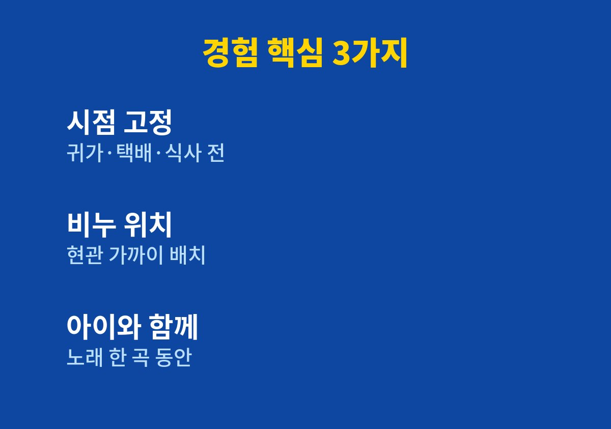
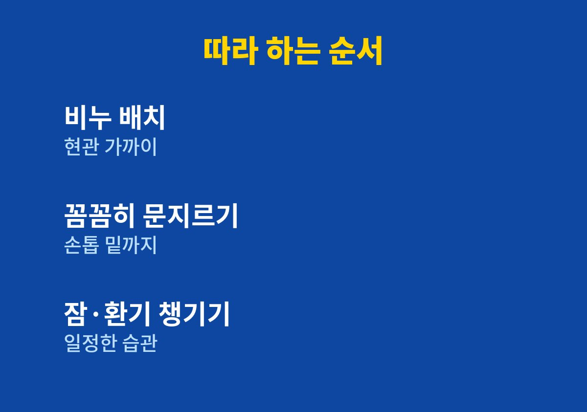

환절기 감기 예방, 먼저 알아야 할 기준부터 적었다.
환절기만 되면 아이들과 번갈아 감기를 앓는 집의 가장에게 필요한 기준과 순서를 담았다.
쇼핑몰을 운영하면서 두 아이를 키우다 보니 내가 아프면 일도 육아도 함께 멈춘다.
그래서 약을 찾기 전에 생활 습관부터 하나씩 바꿔 보았다.
질병관리청도 감염병 예방의 기본으로 올바른 손씻기를 꾸준히 알리고 있다.
2026년 11월 기준으로 공식 안내와 내가 직접 해본 방법을 정리했다.
주문과 포장이 몰리는 시기에 몸살이 오면 하루가 통째로 밀린다.
고객 문의에 답하지 못하면 신뢰에도 영향이 생겨 마음이 더 급해진다.
나 혼자 일하는 구조라 대신 맡아 줄 사람이 없다는 점이 가장 부담이었다.
아이가 어린이집에서 감기를 가져오면 며칠 뒤 내가 같은 증상을 겪는 일이 반복되었다.
아이를 간호하느라 잠이 줄고, 잠이 줄면 내 컨디션도 떨어지는 악순환이 보였다.
그래서 약보다 먼저 집 안으로 들어오는 경로를 줄이는 쪽으로 방향을 잡았다.
이런 일이 해마다 환절기에 되풀이되자 우연이 아니라 습관의 문제로 보였다.
이전의 나는 손에 물만 묻히고 수건에 닦는 수준이었다.
바쁘다는 이유로 비누를 쓰는 과정을 건너뛰는 일이 많았다.
손을 씻었다고 생각했지만 실제로는 손가락 사이와 손톱 밑을 거의 씻지 않았다.
질병관리청 자료를 찾아보니 손씻기를 하는 사람은 늘었지만 올바른 방법으로 씻는 비율은 높지 않다는 내용이 있었다.
비누를 사용해 손바닥, 손등, 손가락 사이, 손톱 밑까지 씻는 것이 기본이다.
번거롭다고 건너뛰던 바로 그 과정이 핵심이라는 사실이 먼저 눈에 들어왔다.
공식 안내를 읽고 나니 새로운 방법이 아니라 이미 아는 기본을 지키는 것이 숙제였다.
씻는 횟수를 늘리겠다는 목표보다 씻는 시점을 정하는 편이 오래 갔다.
현관 가까운 곳에 비누를 두어 들어오자마자 손이 가도록 했다.
아이들에게는 노래 한 곡을 부르는 동안 문지르게 하니 거부감이 줄었다.
처음 일주일은 잊는 날이 많았지만 비누 위치를 바꾼 뒤부터 훨씬 쉬워졌다.
가족 모두가 같은 규칙을 공유하자 아이들이 먼저 챙기기도 했다.

| 시점 | 내가 정한 행동 | 바꾸고 느낀 점 |
|---|---|---|
| 귀가 직후 | 신발을 벗고 바로 비누로 손씻기 | 가장 먼저 자리를 잡았다 |
| 택배 정리 후 | 상자를 만진 뒤 손씻기 | 일과 중에도 끊기지 않았다 |
| 식사 전 | 아이와 함께 손씻기 | 아이의 습관이 되었다 |
표의 세 시점만 지켜도 하루 손씻기가 자연스럽게 채워진다.
기침이 나올 때는 옷소매로 입과 코를 가리는 습관도 함께 알려 주었다.
가족 중 한 명이 증상이 있으면 수건과 컵을 따로 쓰게 했다.
환기도 하루 두 번 시간을 정해 창문을 열어 두었다.
이 정도만 바꿔도 집 안에서 부딪히는 접촉이 눈에 띄게 정리되었다.
1. 현관 가까운 곳에 비누를 두고 귀가 직후를 손씻기 시점으로 정한다.
2. 거품을 내어 손바닥, 손등, 손가락 사이, 손톱 밑을 차례로 문지른다.
3. 노래 한 곡을 떠올리며 대충 끝내지 않도록 시간을 확보한다.
4. 기침이 나오면 옷소매로 가리고 수건과 컵은 따로 쓴다.
5. 하루 두 번 환기 시간을 정하고 잠드는 시간을 일정하게 지킨다.

체크리스트를 냉장고에 붙여 두면 가족이 함께 따라 하기 쉽다.
하루 이틀 놓쳐도 다시 시점부터 시작하면 된다.
완벽하게 지키는 것보다 하루도 빠짐없이 시도하는 것이 더 중요하다고 생각한다.
올해는 아이와 번갈아 앓는 일이 이전보다 줄었다고 느꼈다.
다만 이는 내 체감일 뿐이며 모든 가정에 같은 결과를 보장하지는 않는다.
큰 비용 없이 시작할 수 있다는 점이 손씻기의 가장 큰 장점이다.
아프지 않은 날이 늘어나니 일의 흐름이 끊기지 않아 마음도 한결 편해졌다.
열이 계속되거나 숨쉬기 힘들어 하거나 아이가 축 처진다면 지체하지 말고 의료기관을 찾는 것이 좋다.
증상이 오래 이어진다면 전문의 상담이 필요하다.
※ 2026년 기준 개인 경험과 공식 기준을 바탕으로 정리한 일반 건강 정보이며, 증상이 계속되거나 지병이 있다면 전문의와 상담하시길 바란다.